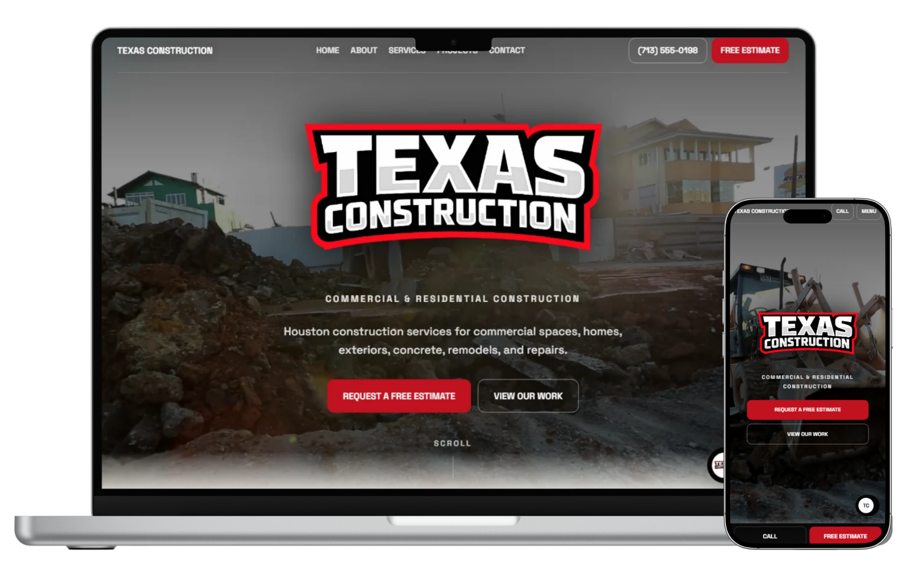

Website Example
Texas Construction Website
A construction website example built around strong first impressions, clear service presentation, and simple quote-ready contact paths for customers looking for residential or commercial construction work.
Focus: Service clarity, trust-building, quote-ready structure
